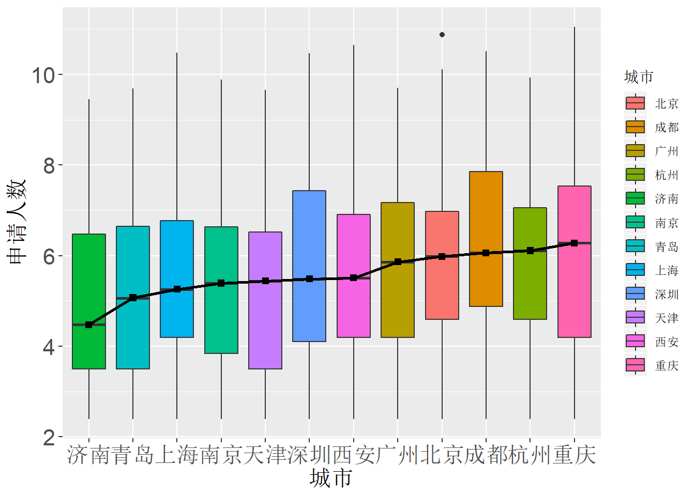
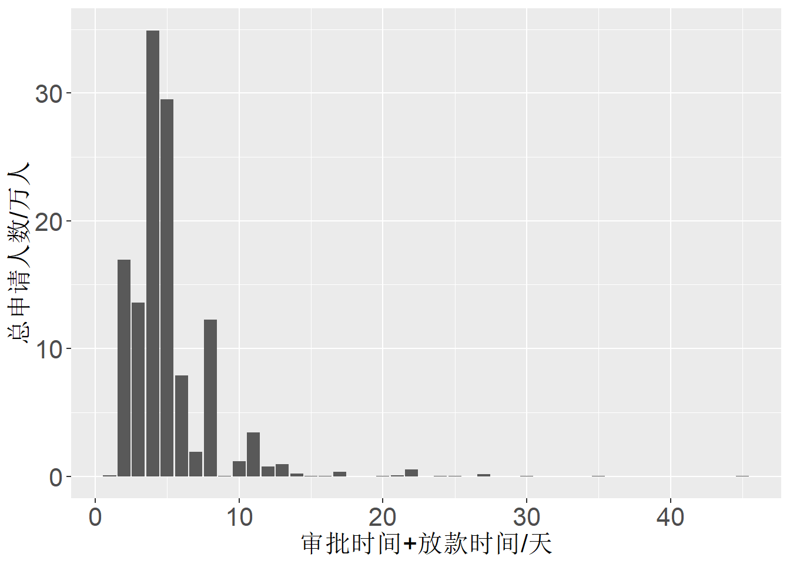

第 6 章 TASK 4 描述分析
6.1 学习资料
描述分析是数据分析报告当中非常重要的环节。描述分析的主要内容包括：
用统计图对数据进行初步的展示。统计图是最能吸引读者的工具，能够给人留下深刻印象，做好了能为报告或者展示大大加分。
用统计表以及各种统计指标对数据进行描述。有的时候，并不适合用统计图展示数据，那么统计表（如频数分布表）或者简单的统计指标（如均值、标准差等）也是很好的选择。
适当地解读描述的结果。描述分析的重点，在于对统计图表的解读。单独展示统计图表，并没有太大的意义。根据统计图表“讲故事”，从统计图表中发现问题才是描述分析的真正目的。
描述分析的整体规范，需要注意篇幅、排版和逻辑三个方面的事项。
篇幅。如今的数据，指标非常丰富，动辄上百个变量。如果一个变量绘制一个统计图，那么将会轻松地完成一本“丑图集锦”！这个时候，就不能在报告中展示所有的变量的描述分析结果，而是要有所取舍。一份长度适中（10页左右）的数据分析报告里面，描述分析的篇幅在3页左右比较合适。
排版。描述分析部分的排版，容易出现的问题是图表尺寸太大，或者一页报告全是图表没有文字。在排版的时候，尽量不要一个图挨着一个图，而是统计图和描述性的文字穿插进行。注意，也不要出现大篇幅的留白。
逻辑。学会对变量进行归纳分组，非常重要。将能够归纳成组的变量，整合在一起作图汇报，而非一个个单独进行描述。
更多地关于统计图的规范，相信大家在阅读过图百讲系列之后己经非常清楚了。接下来说说描述性文字的撰写。
描述性文字的撰写，可以分为两个层次。第一个层次叫做客观陈述，即描述统计图所展现的现象。比如直方图的分布形态、柱状图中各个类别的频数多少等。这个层次的描述性文字，相对容易，主要是做到用语准确，尤其是跟统计学相关的术语。第二个层次叫做合理推断，即解读统计图背后的原因，推测数据为什么呈现出某种规律。这个层次的描述性文字相对较难，需要撰写者进行深入的思考，给出合理的解释。对于初学者来说，通过大量的练习能够比较容易地实现第一个层次的提高。至于第二个层次，需要多接触各行各业的数据以及了解业务问题，才有可能更加合理挖掘数据背后的故事。
6.2 题目
这个TASK将进入一个关键的节点，数据的描述。实际上，很多数据分析报告甚至是实际项目，都仅仅依赖于描述性分析。 在这个TASK任务中，你要照常先下载相关材料并进行仔细阅读。 然后，利用TASK 3的数据完成这个任务。具体地：
你已经对TASK 3的数据有一定的了解。选择一个合适的因变量，并且定义清楚研究问题。
你无需再书写大段的背景介绍，用一个段落说清楚背景和研究问题，然后直接进入描述分析的环节。与此同时，你也无需再介绍数据了，不要复制粘贴你的变量说明表。
请认真组织你的描述分析部分，做到逻辑清晰。你可以设计小标题，方便老师们阅读批改。
用R或者是python完成这个任务，不要用EXCEL完成。把你的代码整理好，写注释，因为我（水妈）也许会抽风抽查。
注意，提交PDF文件，篇幅是3页。依然是小四号宋体，1.5倍行距。请做到图文穿插。统计图也不要太大个头。这次，请你写清楚题目。 DDL：2018年7月26日晚24:00. 请认真完成这个作业，尤其注意你的描述性文字。这个TASK过后，人才计划会进行一轮淘汰。
6.3 探究影响消费金融贷款申请人数的因素——描述性分析
某银行的董事长兼CEO老王发现最近消费金融的发展如火如荼，于是也计划在自己的公司开展提供消费贷款的服务，以吸引更多的客户，提高本公司收益规模。但是提供什么样的贷款才能吸引更多的申请客户呢？老王为此十分着急。就在此时，得力助手小张获取了1046家消费金融公司所发放的，贷款金额为10万元、还款期限为12月的消费贷款明细，包括审批时间、担保方式等7个借贷变量，月供、还款总费用等4个还贷变量，以及贷款申请人数变量。老王在对数据进行深入了解后，凭借大学掌握的统计学知识开展了描述性分析，看看什么因素对贷款的申请人数有影响。
6.3.1 对申请人数（因变量）进行描述
由直方图（图1）可以看出，申请人数呈现明显的右偏分布。具体而言，申请人数的均值为1201人，中位数为33人，最大值为62898人，最小值为0人。由于均值容易受异常值影响，因此均值与中位数相差较大是由于有几个申请人数非常多的贷款产品存在。这在老王的预料范围之内——相当出色的贷款产品是少数，也存在很多没有申请人数的贷款产品。因此老王推测，在形形色色的贷款产品中，大多数人都会选择市面上口碑较好、贷款人数较多的，从而导致有少数极端热门贷款和部分无人申请贷款的局面出现。鉴于数据明显右偏，后续的直方图分类比较中，老王做了取对数的处理，从而使得对比结果更直观。
6.3.2 对借贷变量（自变量）进行描述
老王的公司具有全国各地分公司，但是应该在哪一家分公司发行消费贷款产品呢？他对不同城市贷款产品的申请人数绘制了直方图。 由图2看出，济南的申请人数平均水平（中位数）最低，重庆的最高，除了这两个城市之外，其他10个城市平均水平（中位数）和波动范围的差异比较不明显。其中上海和深圳的平均水平较高，贷款规模较大的数量也比较多，老王认为这是两所城市消费水平较高所导致的；对于北京的贷款规模平平，老王查阅资料后发现消费金融是不能经营“车贷”和“房贷”的，而北京市民更多负担房贷，消费金融水平自然就不高了；成都、重庆、杭州和西安四所城市的贷款规模较高，他推测这四所新一线城市的经济快速增长带来了消费金融的繁荣。


从借入贷款的角度考虑，贷款人提出申请到发放贷款之间等待的总时长是否会影响贷款规模呢？通过条形图（图3），老王发现间隔时间为3-4天的贷款产品申请人数最多，随着等待时间的增加，申请人数整体呈现降低趋势。他猜想，间隔时间太短，可能会给客户留下审批程序不严格的不良印象，而时间太长又会引起客户的不耐烦，因此等待时长3-4天为最佳。

担保方式不同的贷款产品会不会对客户的申请借款意愿产生影响呢？老王通过箱线图发现，“担保贷”竟然是一条直线！原来是因为“担保贷”的数据中申请人数非零的只有一条。其他三种担保方式中，信用贷的申请人数平均水平（中位数）明显高于“抵押贷”和“自由选”，说明凭借借款人信誉，无需提供抵押品或第三方担保的贷款更受客户青睐。
6.3.3 对还贷变量（自变量）进行描述
从还款过程来看，月管理费（图5）收取的是每个月的利息，而“一次性收费”的贷款产品申请人数全为0，因此老王没有将这一种放在比较范围内。箱线图显示，“参考月利率”方式的平均申请人数高于“月管理费”方式，说明客户更喜欢申请按照贷款余额的一定比例计算利息，老王推测，由于贷款余额是可调整的，客户会更偏好按照不同时期个人经济状况来调整月管理费水平。

三种还款方式中（图6），老王发现分期还款的贷款产品申请人数最多，他推测进行消费借贷的客户一般是经济状况不够好的，而到期还款和随借随还的还贷压力较大，分期还款更适合这一类贷款人。
6.3.4 初步结论
经过上述描述分析，老王得出了初步的结论：选择上海、广州、深圳三大一线城市和重庆、西安、成都、杭州四个一线城市的分公司，发行审批时间与放款时间合计3-4天、按照参考月利率收取每月利息的分期还款信用贷，可以吸引更大规模的申请人数，促进公司发展。
6.4 代码
###加载需要的程序包###
library(ggplot2)
library(data.table)
library(readxl)
###读入数据文件###
task_3_data <- read_excel("task_3_data.xlsx")
###更改列名###
colnames(task_3_data) <- c("company","city","loan","deadline","monthly_pay","total_fee","monthly_fee","ddl_lower","ddl_upper","way_to_pay","get_money","get_permmsion","way_to_insure","apply","condition")
###绘图theme函数###
my_ggtheme <- function(){
theme(axis.title.x = element_text(size = 16))+
theme(axis.title.y = element_text(size = 16))+
theme(axis.text.x = element_text(size = 16))+
theme(axis.text.y = element_text(size = 16))
}
###因变量分布###
ggplot(task_3_data, aes(x=apply)) + geom_bar(stat="bin", fill="steelblue4" ) +
labs(x = "申请人数", y = "频数")+
my_ggtheme()
###将管理费类型和费率分别解析出来###
split_fee <- as.data.frame(tstrsplit(task_3_data$monthly_fee, " ")) #根据中间的空格拆分两列信息，设置为数据框split_fee
colnames(split_fee) <- c("fee_type","fee_rate") #重新给列起名
task_3_data <- cbind(task_3_data, split_fee) #和原数据框合并
###城市分类箱线图###
data_no_zero <- task_3_data[-which(task_3_data$apply == 0),] #箱线图取对数画，去掉apply为0的
data_no_zero <- data.table(data_no_zero)
data_no_zero[,med_apply := median(apply), by = "city"] #计算每个城市申请人数的中位数
ggplot(data_no_zero, aes(x = city,y=log(apply)))+ #绘制箱线图
geom_boxplot(aes(fill=city))+
geom_point(data=data_no_zero,aes(x=reorder(city, med_apply),y=log(med_apply)),shape=15,size=2)+
geom_line(data=data_no_zero,aes(x=city,y=log(med_apply),group = 1),color = "black",size=1,linetype = 1)+
labs(x = "城市",y = "申请人数", fill = "城市")+
my_ggtheme()
###绘制担保方式分类箱线图###
ggplot(data_no_zero, aes(x = way_to_insure,y=log(apply)))+
geom_boxplot(aes(fill=way_to_insure))+
labs(x = "担保方式",y = "申请人数", fill = "担保方式")+
my_ggtheme()
###还款方式箱线图###
ggplot(data_no_zero, aes(x = way_to_pay,y=log(apply)))+
geom_boxplot(aes(fill=way_to_pay))+
labs(x = "还款方式",y = "申请人数", fill = "还款方式")+
my_ggtheme()
###日期条形图###
unique(task_3_data$get_money) #查看等待时长都有哪些情况
task_3_data[which(task_3_data$get_money == "审批后当日（审批为3"),"get_money"] <- 0 #将文字改为意思相同的数字
task_3_data$get_money <- as.numeric(task_3_data$get_money) #转化为数值型
task_3_data <- data.table(task_3_data) #转化为data.table
task_3_data$time_before <- task_3_data$get_money + task_3_data$get_permmsion #计算拿到贷款前的等待时间总长
ggplot(task_3_data) + #绘制条形图
geom_bar(aes(x=time_before, y=apply/10000),stat = "identity")+
labs(x = "审批时间+放款时间", y = "总申请人数/万人")+
my_ggtheme()
#########################根据图来看，这两个变量和申请人数似乎没有相关关系
###月供散点图###
ggplot(data_no_zero, aes(x = monthly_pay,y = log(apply),color = log(apply)))+
geom_point(size=3)+
geom_smooth(method = 'lm')+
labs(x = "月供/元",y = "申请人数(取对数)",color = "申请人数")
###还款总费用散点图###
ggplot(data_no_zero, aes(x = total_fee,y = log(apply),color = log(apply)))+
geom_point(size=3)+
geom_smooth(method = 'lm')+
labs(x = "还款总费用/万元",y = "申请人数(取对数)",color = "申请人数")
#########################
###月管理费###
#绘制费用类型箱线图
#注：一次性收费类型申请人数全是0
ggplot(data_no_zero, aes(x = fee_type,y=log(apply)))+
geom_boxplot(aes(fill=fee_type))+
labs(x = "月管理费类型",y = "申请人数", fill = "月管理费类型")+
my_ggtheme()